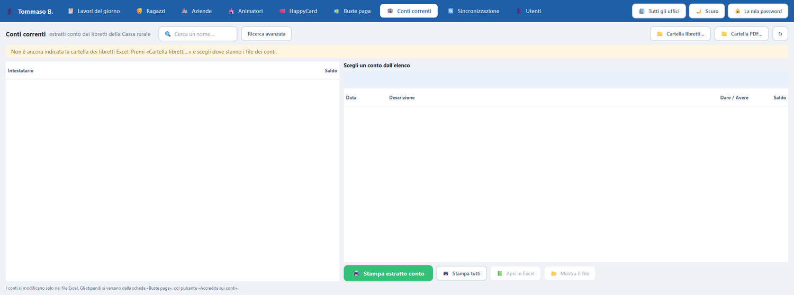

I libretti di risparmio della Cassa rurale del Paese. I file .xls restano la fonte viva: il programma non li copia nel database, li legge.
PdRManager — Conti correnti
{kind=link}

Che cosa fa che cosa
I comandi
| Comando | Che cosa fa |
|---|---|
| Cartella libretti… | Dove stanno i file .xls della Cassa rurale: è la fonte viva, non si copiano nel database. |
| 📗 Apri in Excel | Apre il libretto del conto scelto. |
| 📂 Mostra il file | Apre la cartella con quel file già selezionato. |
| Ricerca avanzata | Chi è in rosso, chi non ha mai preso una busta, chi ha una certa causale. |
| Estratto conto | Il PDF del conto, con il logo della Cassa Rurale: è documento suo. |
Dal primo clic
Come si fa, passo per passo
- Clicca sulla scheda «Conti correnti».
- La prima volta clicca «📁 Cartella libretti…» e indica dove sono i file della Cassa rurale.
- L'elenco si riempie da solo: un ragazzo per riga, col suo saldo.
- Per vedere il libretto di uno, clicca sulla sua riga e poi «📗 Apri in Excel».
Se non funziona: Se l'elenco resta vuoto, quasi sempre la cartella dei libretti è sbagliata: riclicca «📁 Cartella libretti…» e controlla.